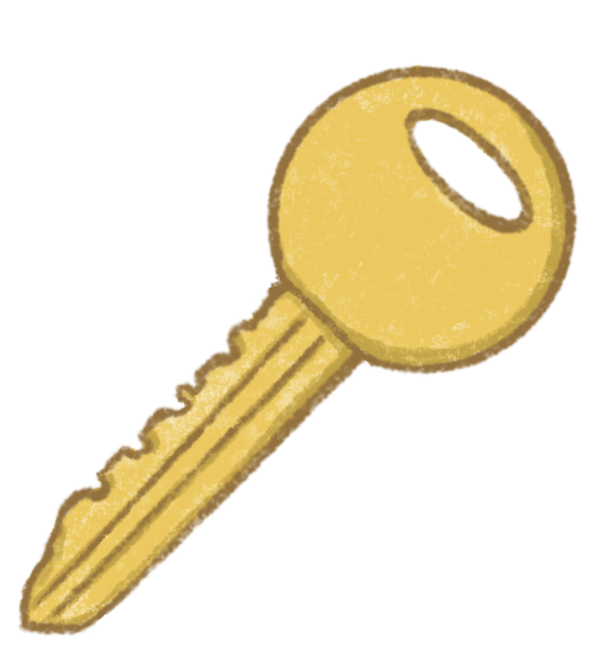
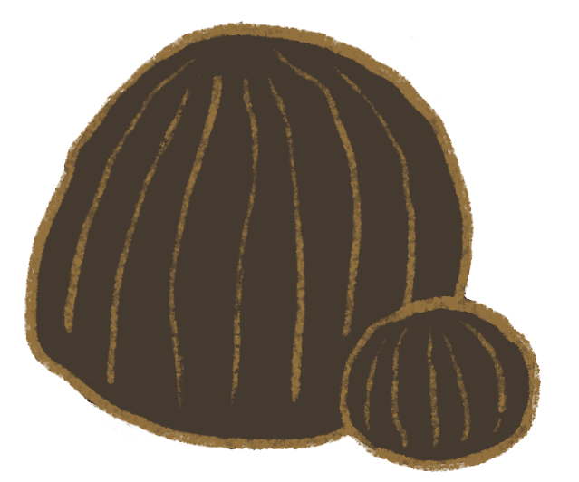
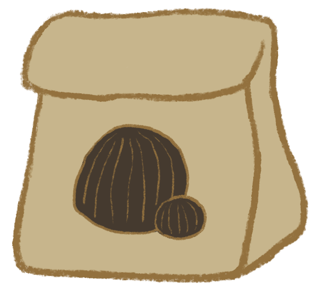
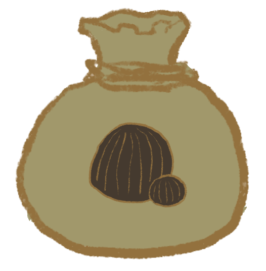
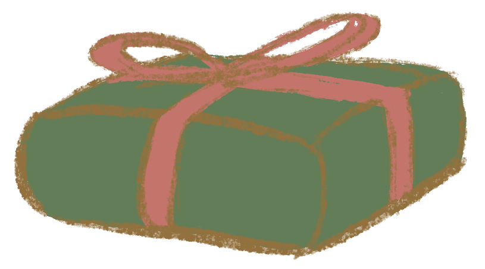
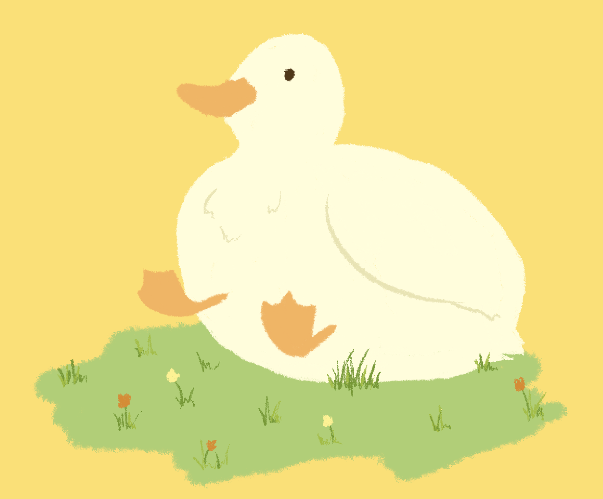
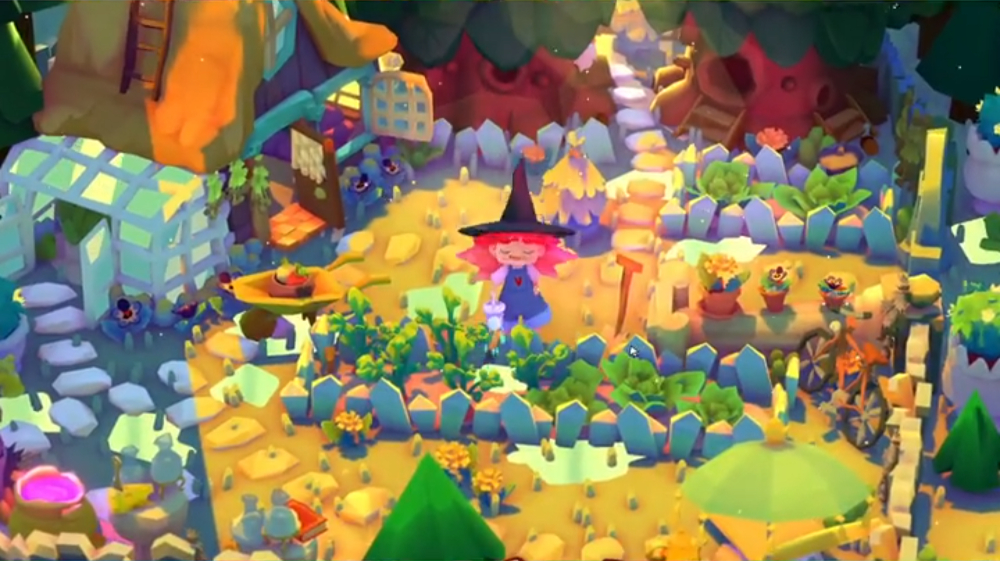
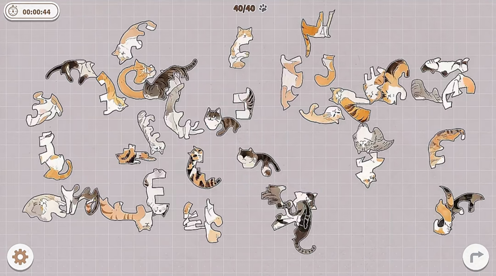

| 製作動機 回目錄 | ||||||||||||||||||||||||||||||||||||||||||||
| 現代社會發展迅速， 許多人們的身心靈沒有完全跟上步調， 導致出現了生活不協調的不舒適感， 在這樣的狀況下，人容易迷茫、無助， 被打亂了自己的節奏而不知道應該如何繼續生活下去， 更可能在極度高壓之下放棄了生命。 小動物常常帶給人可愛療癒的感覺， 動物結合小遊戲的方式希望能暫時忘卻生活中的煩惱， 每一個關卡設計也會有不同的故事意義， 遊戲中也會提醒玩家放輕鬆、不用思考太多之類的小對話， 以及不使用視覺的遊戲玩法，讓玩家的身體也適度放鬆。 在我的經歷中，自己比較容易想太多、 對事情過度緊張，導致在休息的時間也無法真正的放鬆下來， 後來有找到方法暗示自己需要放鬆，但偶爾也會忘記， 希望透過這個遊戲能夠幫助到其他跟我一樣有類似狀況的人， 提醒他們該讓自己休息一下了。 |
||||||||||||||||||||||||||||||||||||||||||||
| 故事大綱 | ||||||||||||||||||||||||||||||||||||||||||||
| 受夠了城市喧囂的主角，剛好收到奶奶的訊息， 「我要和你爺爺環遊世界了，家裡的『小朋友們』就交給你啦」， 主角便休了長假回到鄉下的奶奶家， 和家裡的毛孩子們開啟了度假計畫。 |
||||||||||||||||||||||||||||||||||||||||||||
| 遊戲介紹 回目錄 | ||||||||||||||||||||||||||||||||||||||||||||
| 遊戲類型：2D養成闖關小遊戲 遊戲平台：iOS Android |
||||||||||||||||||||||||||||||||||||||||||||
| 遊戲玩法 | ||||||||||||||||||||||||||||||||||||||||||||
| 每一關都有不同的小動物用不同的形式出現在遊戲中，每一關的玩法也不同。 有輕解謎、園藝種植、寵物養成等類型的關卡， 玩家在解謎遊戲中通關能獲得園藝以及寵物的道具。 還有睡眠系統，到了固定的時間小動物們會陪著你一起休息， 如果失眠了繼續玩手機，小動物也會陪著你熬夜關心你失眠的原因， 若一夜好夢，隔天他們將會為你帶來一份禮物。 |
||||||||||||||||||||||||||||||||||||||||||||
|
||||||||||||||||||||||||||||||||||||||||||||
| 遊戲道具 回目錄 | ||||
|  |  |  |  |  |
|
大門鑰匙 進入莊園前須要先找到鑰匙 才能開始遊戲 |
種子 可以在解謎小遊戲以及莊園的角落獲得 可以種出花卉或者蔬果 |
種子包(小) 可以在解謎小遊戲中獲得 低機率開出稀有種子 |
種子包(大) 可以在禮物包裹中獲得 高機率開出稀有種子 |
禮物包裹 與小動物培養感情可以獲得 高機率開出稀有道具 |
| 遊戲插圖 回目錄 | |
| 小鴨呱呱-開心的在草地玩耍 | |
|  | |
| 遊戲參考 回目錄 | |
| 回首頁 |
|
|  | |